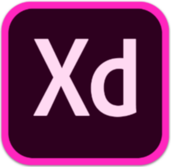
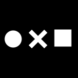
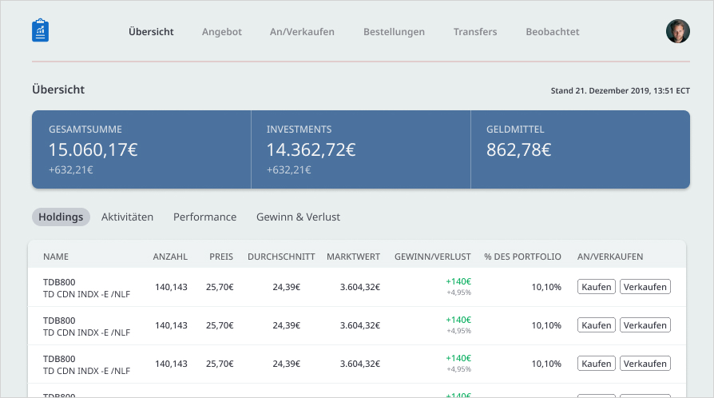

Was ist UI/UX-Design?
»UX design refers to user experience design, while UI design stands for user interface design. Both of these are crucial to an IT product and need to work closely together. Despite being very integral to each other, the roles themselves are quite different, involving distinct processes.«
UX-Design
Funktionalität
UI-Design
Gestaltung
Unterschied zu Print-Design
Interfacedesign ist dynamisch & interaktiv – das gleiche Element kann je nach Gerät, Systemeinstellungen, Zustand oder Interaktion ganz anders aussehen! Zum Beispiel:
- Smartphone ↔ Computer
- Dark Mode ↔ Light Mode
- Gedrückt ↔ Nicht gedrückt
- loading, error, success
Tools & Methodik
-
Figma
figma.com -

Adobe XD
adobe.com/de/products/xd.html -
Sketch
sketch.com
-
Fotos: Pexels
pexels.com -

Icons: Noun Project
thenounproject.com -
Illustrationen: unDraw
undraw.co
Konzeptionsphase
- Ideenfindung / Sinn & Zweck
- Zielgruppenanalyse
- Wireframing der wichtigsten Features
- Erste Tests
- Optimierung
Schritt 3-5 wiederholen bis jedes Feature steht.
Designphase
...
- Assets festlegen
- High-Fidelity Prototyp
- Assets verfeinern
- Tests
↓ →
↓ →
Look & Feel
Farbe sollte...
- ...zum Inhalt passen und die Marke repräsentieren
- ...genug Kontrast haben, sodass alles erkennbar und lesbar ist
- ...einheitliche Statusfarben für z.B. Fehler & Warnungen enthalten
- ...gut aussehen!
Typografie sollte...
- ...nicht zu stark gemixt werden! Maximal zwei Schriftarten auf einer Seite, oft reicht eine.
- ...kontrastreich sein. Schriftschnitte helfen bei Hierarchien, dürfen aber nicht zu ähnlich sein.
Styleguides helfen bei der Erstellung von einheitlichen Designs. So werden im Vorhinein Regeln aufgestellt, die das spätere Ändern von Farben o. Ä. vereinfachen.

Farbe, Typografie und Weißraum helfen sehr stark dabei, enge, überfüllte Layouts besser zu strukturieren. Durch den bewussten Einsatz von Farbe an den richtigen Stellen, durch die Verwendung verschiedener Schriftgrößen und Schriftschnitte und durch das Hinzufügen von Weißraum kann Hierarchie natürlich dargestellt und das Layout angenehmer und übersichtlicher gestaltet werden:
↓
Beispiele für Gestaltungsmöglichkeiten:
Modern / Verspielt
Durch abgerundete Ecken, runde Elemente (wie Kreise), runde Schriften (Rounded) und helle, knallige Farben erzielt man einen modernen & verspielten Look.
Seriös / Elegant
Durch harte Kanten, Schriften mit Serifen und gedeckte oder besondere Farben (Gold, Silber, ...) kann ein seriöser & eleganter Look erstellt werden.
Neutral
Gedeckte und neutrale Farben wie Blau und Grau, serifenlose Schriften und leichte Schatten können dabei helfen, neutrale Looks zu erstellen.
Animationen & Übergänge
Helfen bei Orientierung und können Spaß machen (»joy of use«).
Aber: immer berücksichtigen, ob sie nicht auf Dauer anstrengend oder nervig sein können!
Accessibility
Form over Function! Accessible Design verbessert die Usability für alle Nutzer*innen, und umgekehrt.
Wichtig:
- Informationen nicht nur per Farbe vermitteln
- Ausreichend Kontrast
- Fokus-Styles
- Alles beschriften
- Tastatur-Navigation berücksichtigen
Accessiblity kann alle betreffen:
Able for Figma
bit.ly/able-figmaStark
getstark.coWAVE
wave.webaim.orgGoogle Lighthouse
web.dev/measureResponsive Design
Mit Smartphone anfangen (»Mobile First«), dann größere Screens designen, um den zusätzlichen Platz sinnvoll zu nutzen. Übliche Breakpoints:
- 375px Breite: Smartphone
- 768px Breite: Tablet
- 1024px Breite: Desktop
- 1400px Breite: Desktop (groß)
Üblicherweise arbeitet man mobil mit einem einspaltigen Layout und fügt für größere Screens dann weitere hinzu. Man kann Inhalte...
- ...anders anordnen: mehrere Spalten nutzen, Elemente fixieren
- ...skalieren: wichtige Elemente vergrößern, mehr Weißraum
- ...neu hinzufügen: weitere hilfreiche Begleit-Elemente einblenden
Einige Funktionen der Designtools (z.B. "Constraints" in Figma) helfen beim Responsive Design, aber generell gibt es beim Interfacedesign eine große Differenz zwischen den Möglichkeiten bei der Umsetzung mit Code und den Möglichkeiten, die Designtools bieten. Lasst euch davon in eurer Kreativität nicht einschränken!
»By continually studying the work that inspires you with a careful eye, you’ll be picking up design tricks for years to come.«
Quellen
Seite 1 (PDF)
- Zitat von Hackernoon https://hackernoon.com/what-is-ui-ux-design-1f01e9dbbf02 Stand: 16.01.2020
- Bild »Link« von Nintendo vgl. https://www.nintendo.de/Spiele/Nintendo-Switch/The-Legend-of-Zelda-Link-s-Awakening-1514327.html# Stand: 16.01.2020
- Logo »Adobe XD« von Adobe https://www.subtraction.com/2018/05/15/adobe-xd-ten-million-and-zero/ Stand: 16.01.2020
- Logo »Figma« von Figma https://www.indiemakers.tools/product/figma/ Stand: 16.01.2020
- Logo »Sketch« von Sketch https://www.sketch.com/press/ Stand: 16.01.2020
- Logo »Pexels« von Pexels https://www.trilobit.de/trilobits/contao-erweiterung-pexels.html Stand: 16.01.2020
- Logo »Noun Project« von The Noun Project https://thenounproject.com Stand: 16.01.2020
- Logo »unDraw« von unDraw https://uxpro.cc/toolbox/undraw/ Stand: 16.01.2020
Seite 4 (PDF)
- Bild »Accessibility« von Microsoft https://stephanielummis.com/accessible-websites/ Stand: 16.01.2020
- Logo »Figma« von Figma https://www.indiemakers.tools/product/figma/ Stand: 16.01.2020
- Logo »Stark« von Stark https://www.getstark.co Stand: 16.01.2020
- Logo »Wave« von Wave https://wave.webaim.org Stand: 16.01.2020
- Logo »Google« von Google https://de.wikipedia.org/wiki/Datei:Google_%22G%22_Logo.svg Stand: 16.01.2020
{kind=link}
Seite 5 (PDF)
- Zitat von Adam Wathan und Steve Schoger aus Refactoring UI von Adam Wathan & Steve Schoger Seite 218 Stand: 16.01.2020